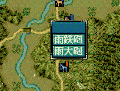

int カスタム::On_カスタム条件(string 条件名, カスタム条件パラメタ型 パラメタ) {
if ( 条件名 == "OR条件::戦争::雨鉄砲可否" ) {
}
// 変更しない場合-1
return -1;
}

int カスタム::On_カスタム条件(string 条件名, カスタム条件パラメタ型 パラメタ) {
if ( 条件名=="OR条件::戦争::雨鉄砲可否" ) {
// "OR条件::戦争::雨鉄砲可否" の際は、「パラメタ.整数1」に、
// 今鉄砲を撃とうとする、武将番号が入る。
int iBushouID = パラメタ.整数1 - 1;
// 通常の武将以外鉄砲撃てないはずであるが、一応配列にアクセスするので、安全を保っておく
if ( 0 <= iBushouID && iBushouID < 最大数::武将情報::配列数 ) {
if ( Get_鉄砲適性(iBushouID) == 鉄砲適性::Ｓ ) {
// この条件を満たす者もまた、雨鉄砲を打てるとみなす。
return true;
}
}
}
// それ以外は条件を変えない。
return -1;
}
int カスタム::On_カスタム条件(string 条件名, カスタム条件パラメタ型 パラメタ) {
/*
* 鉄砲を打とうとしている武将ユニットが、
* 野戦に限定で、戦闘マップのヘックスチップ「道」の上にいて、
* しかも、その武将が、鉄砲適性Ａ以上ならば、その瞬間は、雨鉄砲が撃てる。
*/
if ( 条件名=="OR条件::戦争::雨鉄砲可否" ) {
int iBushouID = パラメタ.整数1 - 1; // 鉄砲を打とうとする武将ＩＤ
// 通常の武将以外鉄砲撃てないはずであるが、一応配列にアクセスするので、安全を保っておく
if ( 0 <= iBushouID && iBushouID < 最大数::武将情報::配列数 ) {
// 野戦の時、
if ( Is_野戦中() ) {
// 今鉄砲を撃とうとしている武将はＨＥＸマップのどこにいるの？
ヘックス位置型 pos = Get_武将の野戦ヘックス位置(iBushouID);
// その位置の地形の役割は何？
int chikei = Get_野戦ヘックス役割(pos);
// その地形は「道」だ!!
if ( chikei == 野戦ヘックス役割::道 ) {
// 武将の適性がＡ以上
if ( Get_鉄砲適性(iBushouID) >= 鉄砲適性::Ａ ) {
return true;
}
}
}
}
}
// それ以外は条件を変えない。
return -1;
}